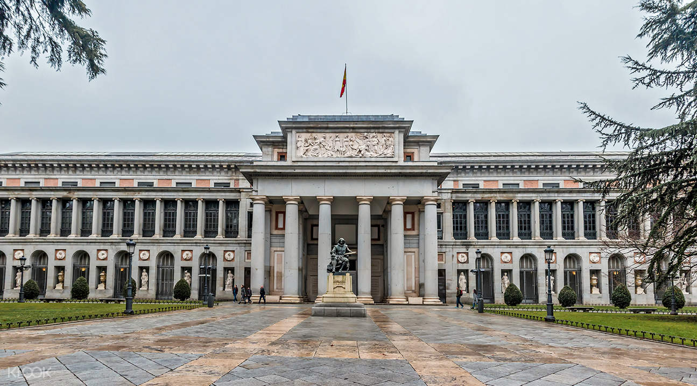

프라도 미술관
프라도 미술관은 1785년 카를로스 3세에 의해 건설되기 시작했는데 원래는 자연과학 박물관이 될 예정이었다.
설계를 담당했던 사람은 당시 스페인의 대표적인 건축가 후안 데 비야누에바였다.
그러나 나폴레옹과의 전쟁으로 인해 공사가 중단되었고, 전후에는 페르난도 7세에 의해 스페인 왕가의 미술품을 소장하는 미술관으로 계획이 변경되었다.
스페인 왕가의 방대한 컬렉션을 기반으로 한 왕실 전용 갤러리가 국립 미술관이 된 뒤에도 귀중한 미술품의 수집은 현재까지 계속되고 있다.
작품 구성을 보면 역시 스페인 회화 부문이 충실하다.
스페인 회화의 3대 거장으로 불리는 엘 그레코, 고야, 디에고 벨라스케스를 비롯해 16~17세기 스페인 회화의 황금기에 활약했던 화가들의 주옥같은 작품들이 감탄을 자아낸다.
또한 스페인 왕실과 관계가 깊었던 네덜란드의 플랑드르파 작품도 많고, 르네상스 시대의 거장인 라파엘로와 보티첼리 등 이탈리아 회화 작품도 충실하다.
그 외에 독일, 프랑스 등 유럽 회화의 걸작, 고대의 조각 작품군도 전시되어 있어 천천히 관람한다면 하루는 족히 소요된다.
프라도 미술관에는 문이 3개 있는데 각각의 문에는 고야, 벨라스케스, 무리요의 동상이 입장하는 관람객을 맞이하듯이 서 있다.
보안 검색 때문에 입장할 때 시간이 걸리기도 한다.
관내에서는 촬영을 금지하고 있으며 큰 짐은 보관소에 맡길 수 있다.